|
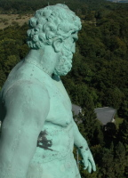 |
ACA 2016 22nd Conference on Additional Program |
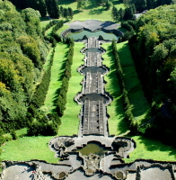 |
Museums
at Kassel
|
Conference Excursion Short information (pdf) Detailed information Bergpark Wilhelmshöhe Herkules Water Features |
Conference Dinner |
By clicking on some pictures you can view an enlarged version.
| On 23 June 2013 the Bergpark Wilhelmshöhe with
the Hercules
were proclaimed as World
Heritage Site. Descending a long hill dominated by a giant statue of Hercules, the monumental water displays of Wilhelmshöhe were begun by Landgrave Carl of Hesse-Kassel in 1689 around an east-west axis and were developed further into the 19th century. Reservoirs and channels behind the Hercules Monument supply water to a complex system of hydro-pneumatic devices that supply the site’s large Baroque water theatre, grotto, fountains and 350-metre long Grand Cascade. Beyond this, channels and waterways wind across the axis, feeding a series of dramatic waterfalls and wild rapids, the geyser-like Grand Fountain which leaps 50m high, the lake and secluded ponds that enliven the Romantic garden created in the 18th century by Carl’s great-grandson, Elector Wilhelm I. The great size of the park and its waterworks along with the towering Hercules statue constitute an expression of the ideals of absolutist Monarchy while the ensemble is a remarkable testimony to the aesthetics of the Baroque and Romantic periods. (Text from UNESCO) An excellent description of the Bergpark Wilhelmshöhe can be found in the dossier for getting the status of a World Heritage Site: Nominierung zur Eintragung in die UNESCO-Welterbeliste Kassel: Hessisches Ministerium für Wissenschaft und Kunst, 300 pages, 2011. (pdf, 45 MB) Some pictures of this description are taken from that dossier. This will be noted by mhk_dossier. (mhk : Museumslandschaft Hessen Kassel) You may look at a new animated cartoon film "Die Wasserspiele - Bergpark Wilhelmshöhe" (4.33 min) produced by mhk.. Two other films on youtoube about the Bergpark Wilshelmshöhe produced by Hessischer Rundfunk Die Wasserkunst von Wilhelmshöhe (44.36 min) and Südwestfunk Schätze der Welt - Bergpark Wilhelmshöhe (14.57 min) Free Bergpark Apps: iTunes and Google Play You can examine the whole location of our excursion on a contemporary leaflet (pdf) or a historic map of Bergpark Wilhelmshöhe (about 1810). |
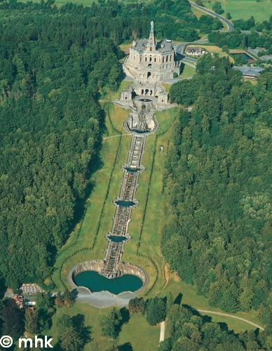 |
| The Hercules Monument The monument was built from 1701 until 1717 after plans of the Landgrave Karl by the italian architect Giovanni Francesco Guerniero and a lot of serfs of the surrounding villages. The monument was built for mere representative purpose. The monument is located 515 m above sea level. The Hercules monument has a total height of 70.5 meters. 32.65 meters are accounted for by the Octagon; 29.60 meters for the Pyramid and 8.25 meters for the Hercules statue itself. The height difference between top of the statue and the bottom of the cascades is 179 meters. Today, after a lot of restoration work, it is possible to ascend to the platform (more pictures) for getting a nice view over the city of Kassel. https://de.wikipedia.org/wiki/Datei:Herkules_Kassel_Ausblick_Panorama.jpg
|
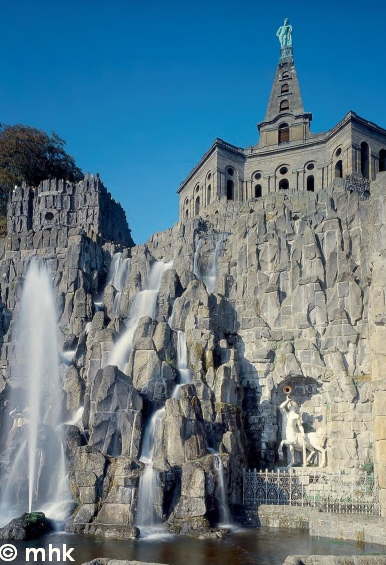 |
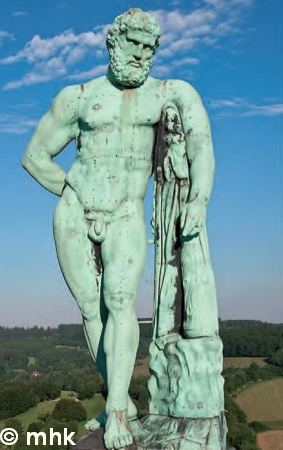 |
The Statue The copper statue on the top of the pyramid was manufactured at the Messinghof near Kassel by the goldsmith Johann Jacob Anthoni from copper sheets (thickness about 3 mm). The work endured from 1714 until 1717. It is a copy of the marble Farnese Hercules. |
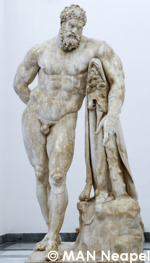 |
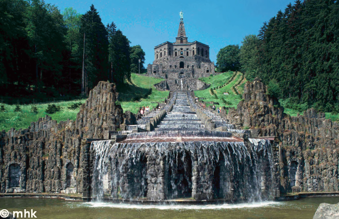
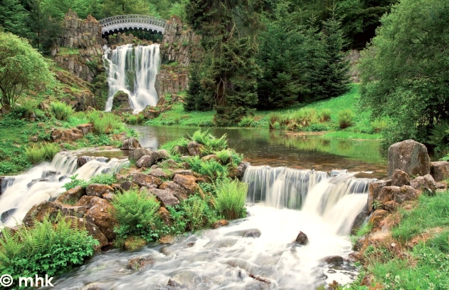
|
The valve of the
fountain
is opened by a
simple iron chain at the end of a hand gear which lifts a heavy iron plate. |
||
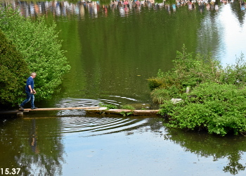 The „Wassermeister“ comes … |
…
to fetch the chain …
|
…
to a secure place.
|
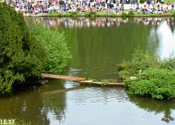 He withdraws the middle part of the gangplank. |
The public and the ducks are waiting.
|
The Wassermeister tears the chain …
|
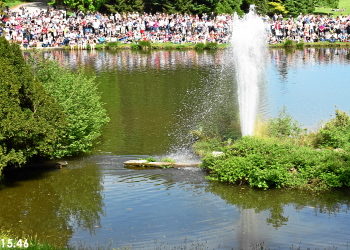 … and the fountain begins. |
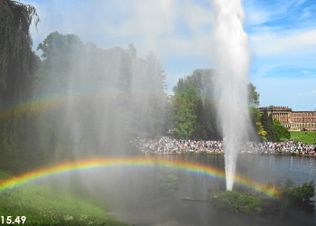 |
|
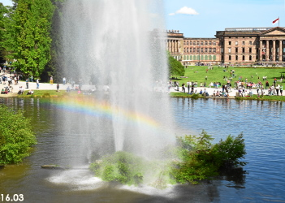 The public disappears … |
…
and the foutain …
|
…
finishes.
|
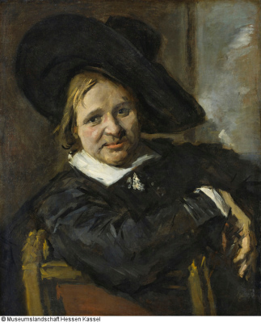 Franz Hals Der Mann mit dem Schlapphut |
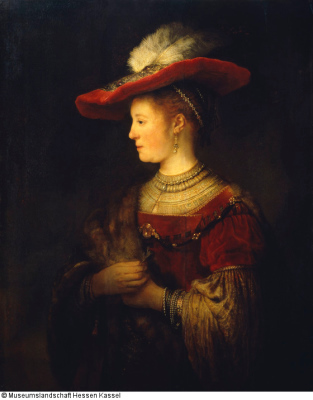 Rembrandt Harmensz. van Rijn Saskia van Uylenburgh |